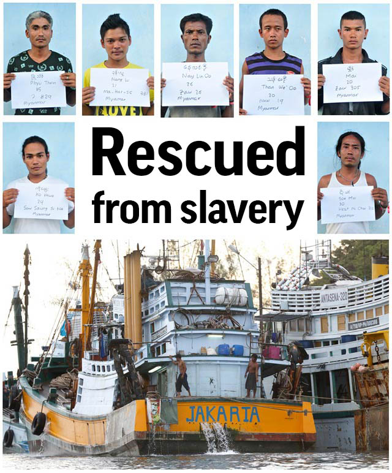

AP Photo, Ugeng Nugroho/Indonesian Ministry of Maritime Affairs and Fisheries
More than 2,000 fishermen were rescued this year from brutal conditions, liberated as a result of an Associated Press investigation into slavery in the Southeast Asian fishing industry. These are some of.their.stories.
Published: May 12, 2015
For years these men were trafficked under fake names, forced to work long hours on Thai-run fishing boats for little or no money and brutally beaten by their captains. Now, as they wait on an Indonesian island for the day when they can go home, they finally have their real names and identities back.
The men from Myanmar, Cambodia and Laos are migrants who were lured or forced into the Thai fishing industry and sent to a remote Indonesian island village called Benjina, an Associated Press investigation found. Their catch enters the supply chains of major American stores and supermarkets and can end up on our dinner plates. As soon as Indonesian officials arrived to investigate allegations of modern-day slavery, they started evacuations.
When word spread that a rescue was imminent, hundreds of men raced through the rain onto six giant fishing trawlers to be taken to safety on the island of Tual.
Ugeng Nugroho/Indonesian Ministry of Maritime Affairs and Fisheries
Nearly 600 people have been rescued or identified to be repatriated in Tual and Benjina. Hundreds of stranded Thai fishermen are also waiting to be processed.
The first step in the process is to photograph each man, one by one, holding a sign with his name, his nationality, his age and the ship that served as his floating prison. The International Organization for Migration is working alongside embassies to gather information for passports.
The men hope to be able to board flights within the next few weeks and return home to families they have not seen in years, even decades.
Myanmar, age: 17
Kyaw Lin Than
There are three kids in our family, but I'm the oldest. Ever since I was young, I wanted to earn money so I could help look after my parents.
An agent took me from Yangon to Thailand saying that I'd earn a lot of money – $300 a month – but as soon as I arrived the boss sent me back to Myanmar's border town of Kaw Thaung. I was told to wait there, in the forest, until someone came and got me to work on a fishing boat. That's how I eventually ended up in Indonesia.
It was such tiring work. They didn't treat me like a kid, I had to do the same work as adults. After the nets were pulled up, I'd have to help separate the fish by size and species. While doing that, I sometimes got pricked by a thorn from the poisonous fish fins and I got sick. But even then, I wasn't allowed to take a rest.
If I did something wrong with my work, the captain swore at me and beat me on the head. I was very new to the boat – and only worked there five months – so there were so many things I didn't know. The captain and other people always scolded or beat me because I couldn't do things right.
Myanmar, age: 29
Myint Zaw Oo
I was sold by an agent.
I trusted my friends and followed them – 15 guys from my village left at the same time. We spent four or five days in Thailand before we were put on a fishing boat that took us to Indonesia. We had no idea we were going to be taken so far away.
I got so sea sick. While working on the boat, pulling up the fishing net, the captain was always yelling at us. Sometimes he beat us up. Sometimes he'd whip me with the tail of a stingray.
There were times when we had to work 24 hours a day. We had to work all the time. Sometimes I'd try to rest, even just for an hour or two, but he wouldn't let me.
We were supposed to get paid 9,000 baht (US $265) each time we returned to shore, but they only gave us a tiny bit of that.
Myanmar, age: 22
Thet Naing Oo
Our lives had no more value than a dog. If we got injured or broke bones while working on the fishing boat in the sea, the bosses would pretend they were getting us medical treatment. A doctor would give us an injection, but we didn't trust that. Some died.
We were only fed twice a day – we just got a tiny bit of food.
I want people in Myanmar to know what happened to us. I don't want other people to let themselves be sold by agents and then get stuck, like we all did.
This is happening to so many people.
Myanmar, age: 28
Aung Zin Win
I started working on the boat in September 2010. I was not a fisherman, though, and had no idea what to do. I got sick. I was totally unable to work so the captain punched me, saying it didn't matter how I felt, I had to work.
When we got to Benjina, he left me there and I was placed in the jail at the port. When I was finally released, I started working at the dock, loading and unloading fish from the boats.
Eventually I was put back on a trawler. It happened again, I got sick, was thrown in the jail when we returned to port, and then for a time worked on the docks.
After this happened a fourth time, the captain decided to bring me back to Thailand. I had no money, so I could not go back home. I was sold again to a fishing boat, returning to Indonesia in 2012.
Myanmar, age: 24
Ye' Ko
There were a lot of people in our group, I don't remember exactly how many. After crossing the Thai border, we were met by police and taken to the station. Some people from the fishing boat company got us out – they must have paid the officers – bringing us to a house for a night's sleep.
The next morning they put us all in a car and drove us for two days and two nights, telling us they were taking us to a rice factory. But it turned out they took us to the port, where we learned we'd been sold by agents for 18,000 baht (U.S. $530) apiece, and that we were going to be put on Thai fishing trawlers.
We were divided into small groups, ours had nine people. One of the guys said he didn't want to go, that he would call his family and get them whatever money they needed, but he was just slapped and beaten.
They took away our phones and locked us in a garage. Even when we needed to go to the bathroom, they wouldn't let us out. We used plastic bags, tying them up. They only opened the door to feed us and to take the bags. They came back a few days later with three more guys, locking the door again.
The next day they put all 12 of us onto a boat. We were only on the sea for about a day when we anchored – probably for 10 days. We asked, "What are we doing here?" We were told we had to wait there for our new passports.
The next day, the documents came. Our pictures were on them, but the names were fake.
"These are your Thai names," they said. "Get to know them." And then we left for Indonesia.
CORRECTION: An earlier version of this project incorrectly credited images to the International Organization for Migration. Photo credits should read Ugeng Nugroho/Indonesian Ministry of Maritime Affairs and Fisheries.